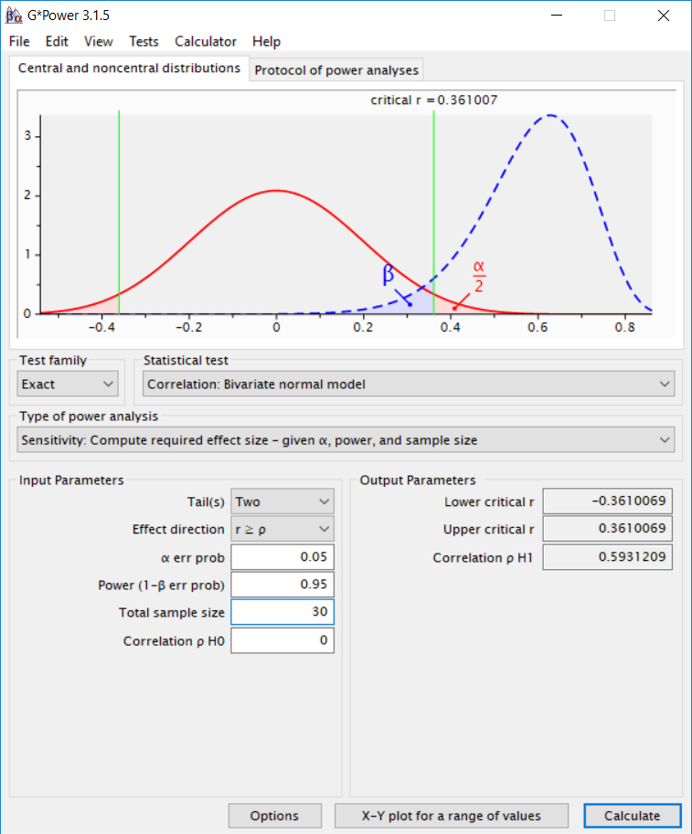

2.2 Feasibility
A common reason why a specific number of observations is collected is because collecting more data was not feasible. Note that all decisions for the sample size we collect in a study are based on the resources we have available in some way. A feasibility justification makes these resource limitations the primary reason for the sample size that is collected. Because we always have resource limitations in science, even when feasibility is not our primary justification for the number of observations we plan to collect, it is always a secondary reason. Despite the omnipresence of resource limitations, the topic often receives very little attention in texts on experimental design. This might make it feel like a feasibility justification is not appropriate, and you should perform an a-priori power analysis or plan for a desired precision instead. But feasibility always plays a secondary role, and therefore regardless of which justification for the sample size you provide, you will almost always need to include a feasibility justification as well.
Time and money are the two main resource limitations a scientist faces. Our master students write their thesis in 6 months, and therefore their data collection is necessarily limited in whatever can be collected in 6 months, minus the time needed to formulate a research question, design an experiment, analyze the data, and write up the thesis. A PhD student at our department would have 4 years to complete their thesis, but is also expected to complete multiple research lines in this time. In addition to limitations on time, we have limited financial resources. Although nowadays it is possible to collect data online quickly, if you offer participants a decent pay (as you should) most researchers do not have the financial means to collect thousands of datapoints.
A feasibility justification puts the limited resources at the center of the justification for the sample size that will be collected. For example, one might argue that 120 observations is the most that can be collected in the three weeks a master student has available to collect data, when each observation takes an hour to collect. A PhD student might collect data until the end of the academic year, and then needs to write up the results over the summer to stay on track to complete the thesis in time.
A feasibility justification thus starts with the expected number of observations (N) that a researcher expects to be able to collect. The challenge is to evaluate whether collecting N observations is worthwhile. The answer should sometimes be that data collection is not worthwhile. For example, assume I plan to manipulate the mood of participants using funny cartoons and then measure the effect of mood on some dependent variable - say the amount of money people donate to charity. I should expect an effect size around d = 0.31 for the mood manipulation (Joseph et al., 2020Joseph, D. L., Chan, M. Y., Heintzelman, S. J., Tay, L., Diener, E., & Scotney, V. S. (2020). The manipulation of affect: A meta-analysis of affect induction procedures. Psychological Bulletin, 146(4), 355–375. https://doi.org/10.1037/bul0000224), and seems unlikely that the effect on donations will be larger than the effect size of the manipulation. If I can only collect mood data from 30 participants in total, how do we decide if this study will be informative?
If we want to evaluate whether the feasibility limitations make data collection uninformative, we need to think about what the goal of data collection is. First of all, having data always provide more knowledge than not having data, so in an absolute sense, all additional data that is collected is better than not collecting data. However, in line with the idea that we need to take into account costs and benefits, it is possible that the cost of data collection outweighs the benefits. To determine this, one needs to think about what the benefits of having the data are. The benefits are clearest when we know for certain that someone is going to make a decision, with or without data. If this is the case, then any data you collect will reduce the error rates of a well-calibrated decision process, even if only ever so slightly. In these cases, the value of information might be positive, as long as the reduction in error rates is more beneficial than the costs of data collection. If your sample size is limited and you know you will make a decision anyway, perform a compromise power analysis, where you balance the error rates, given a specified effect size and sample size.
Another way in which a small dataset can be valuable is if its existence makes it possible to combine several small datasets into a meta-analysis. This argument in favor of collecting a small dataset requires 1) that you share the results in a way that a future meta-analyst can find them, and 2) that there is a decent probability that someone will perform a meta-analysis in the future which inclusion criteria would contain your study, because a sufficient number of small studies exist. The uncertainty about whether there will ever be such a meta-analysis should be weighed against the costs of data collection. One way to increase the probability of a future meta-analysis is if you commit to performing this yourself in the future. For example, you might plan to repeat a study for the next 12 years in a class you teach, with the expectation that a meta-analysis of 360 participants would be sufficient to achieve around 90% power for d = 0.31. If it is not plausible you will collect all the required data by yourself, you can attempt to set up a collaboration, where fellow researchers in your field commit to collecting similar data, with identical measures, over the next years. If it is not likely sufficient data will emerge over time, we will not be able to draw informative conclusions from the data, and it might be more beneficial to not collect the data to begin with, and examine an alternative research question with a larger effect size instead.
Even if you believe over time sufficient data will emerge, you will most likely compute statistics after collecting a small sample size. Before embarking on a study where your main justification for the sample size is based on feasibility, you can expect. I propose that a feasibility justification for the sample size is always accompanied by three statistics, detailed in the following three sections.
2.2.1 The smallest effect size that can be statistically significant
In Figure 2.1 the distribution of Cohen’s d given 15 participants per group is plotted when the true effect size is 0 (or the null-hypothesis is true), and when the true effect size is d = 0.5. The blue area is the Type 2 error rate (the probability of not finding p < α, when there is a true effect, and α = 0.05). 1 - Type 2 error is the statistical power, or the probability of a test to yield a statistically significant result if the alternative hypothesis is true (Aberson, 2019Aberson, C. L. (2019). Applied Power Analysis for the Behavioral Sciences: 2nd Edition (2 edition). Routledge.; Cohen, 1988Cohen, J. (1988). Statistical power analysis for the behavioral sciences (2nd ed). L. Erlbaum Associates.). Power depends on the Type 1 error rate (α), the true effect size in the population, and the number of observations.
Figure 2.1: Null and alternative distribution, assuming d = 0.5, alpha = 0.05, and N = 15 per group.

Because the true effect size is typically unknown, it makes most sense to speak about the power function. In Figure 2.2 you see a power curve for an independent t-test, with an alpha level of 0.05. We see that as the effect size (in Cohen’s d) increases, power increases. If the effect you study has an effect size of 0.5, you would have almost 70% power with 50 observations in each independent group (indicated by the red dot). If the true effect size is smaller, power is lower, and as the effect size is larger, power is larger.
Figure 2.2: Power curve for an independent t-test as a function of the true effect size.

Power analysis is the practice of computing the effect size, desired power, sample size, or alpha level from the other three values. Computing the required sample size is commonly referred to as a-priori power analysis, computing the smallest effect size you have the desired power for is called sensitivity power analysis, computing the alpha level is called criterion power analysis, and computing the achieved power is called post-hoc power analysis.
You might seen graphs like Figure 2.1 before. The only thing I have done is to transform the t-value distribution that is commonly used in these graphs, and calculated the distribution for Cohen’s d. This is a straightforward transformation, but instead of presenting the critical t-value the figure provides the critical d-value. For a two-sided independent t-test, this is calculated as:
where ‘a’ is the alpha level (e.g., 0.05) and N is the sample size in each independent group. For the example above, where alpha is 0.05 and n = 15:
## [1] 0.7479725The critical t-value (2.0484071) is also provided in commonly used power analysis software such as G*Power. We can compute the critical Cohen’s d from the t-value and sample size using: \(d = t{\sqrt{1/n_1 + 1/n_2}}\).
Figure 2.3: The critical t-value is provided by G*Power software.

When you will test an association between variables with a correlation, G*Power will directly provide you with the critical effect size. When you compute a correlation based on a two-sided test, your alpha level is 0.05, and you have 30 observations, only effects larger than r = 0.361 will be statistically significant. In other words, the effect needs to be quite large to even have the mathematical possibility of becoming statistically significant.
Figure 2.4: The critical r is provided by G*Power software.
The critical effect size gives you information about the smallest effect size that, if observed, would by statistically significant. If you observe a smaller effect size, the p-value will be larger than your significance threshold. You always have some probability of observing effects larger than the critical effect size. After all, even if the null hypothesis is true, 5% of your tests will yield a significant effect. But what you should ask yourself is whether the effect sizes that could be statistically significant are realistically what you would expect to find. If this is not the case, it should be clear that there is little (if any) use in performing a significance test. Mathematically, when the critical effect size is larger than effects you expect, your statistical power will be less than 50% (see the section on observed power). If you perform a statistical test with less than 50% power, your single study is not very informative. Reporting the critical effect size in a feasibility justification should make you reflect on whether a hypothesis test will yield an informative answer to your research question.
2.2.2 Compute the width of the confidence interval around the effect size
The second statistic to report alongside a feasibility justification is the width of the 95% confidence interval around the effect size. As we saw in the section on confidence intervals they represent a range that is wide enough so that in the long run in 95% of repetitions of the same experiment the true population parameter falls within each confidence interval calculated around the observed effect size. Cumming (2013Cumming, G. (2013). Understanding the new statistics: Effect sizes, confidence intervals, and meta-analysis. Routledge.) calls the difference between the observed effect size and the upper 95% confidence interval (or the lower 95% confidence interval) the margin of error (MOE).
# Compute the effect size d and 95% CI
res <- d.ind.t(m1 = 0, m2 = 0, sd1 = 1, sd2 = 1, n1 = 15, n2 = 15, a = .05)
# Print the result
res$estimate## [1] "$d_s$ = 0.00, 95\\% CI [-0.72, 0.72]"## [1] 0.7156777# For non-zero effects the CI is based on the non-central t
# The MOE is then asymmetric (but differences are very small)
(res$d - res$dlow)## [1] 0.7156777## [1] 0.7156777If we compute the 95% CI for an effect size of 0, we see that with 15 observations in each condition of an independent t-test the 95% CI ranges from -0.72 to 0.72. The MOE is half the width of the 95% CI, 0.72. This clearly shows we have a very imprecise estimate. A Bayesian estimator who uses an uninformative prior would compute a credible interval with the same upper and lower bound (Albers et al., 2018Albers, C. J., Kiers, H. A. L., & Ravenzwaaij, D. van. (2018). Credible Confidence: A Pragmatic View on the Frequentist vs Bayesian Debate. Collabra: Psychology, 4(1), 31. https://doi.org/10.1525/collabra.149), and might conclude they personally believe there is a 95% chance the true effect size lies in this interval. A frequentist would reason more hypothetically: If the observed effect size in the data I plan to collect is 0, I could only reject effects more extreme than d = 0.72 in an equivalence test with a 5% alpha level (even though if such a test would be performed, power might be low, depending on the true effect size). Regardless of the statistical philosophy you plan to rely on when analyzing the data, our evaluation of what we can conclude based on the width of our interval tells us we will not learn a lot. Effect sizes in the range of d = 0.7 are findings such as “People become aggressive when they are provoked”, “People prefer their own group to other groups”, and “Romantic partners resemble one another in physical attractiveness” (Richard et al., 2003Richard, F. D., Bond, C. F., & Stokes-Zoota, J. J. (2003). One Hundred Years of Social Psychology Quantitatively Described. Review of General Psychology, 7(4), 331–363. https://doi.org/10.1037/1089-2680.7.4.331). The width of the confidence interval tells you that you can only reject the presence of effects that are so large, if they existed, you would probably already have noticed them. It might still be important to establish these large effects in a well-controlled experiment. But since most effect sizes in we should realistically expect are much smaller, we do not learn something we didn’t already know from the data that plan to collect. Even without data, we would exclude effects larger than d = 0.7 in most research lines.
We see this the MOE is almost, but not exactly, the same as the critical effect size d we observed above (d = 0.7479725). The reason for this is that the 95% confidence interval is calculated based on the tdistribution. If the true effect size is not zero, the confidence interval is calculated based on the non-central tdistribution, and the 95% CI is asymmetric. Figure 2.5 vizualizes three t-distributions, one symmetric at 0, and two asymmetric distributions with a noncentrality parameter of 2 and 3. The asymmetry is most clearly visible in very small samples (the distribution in the plot have 5 degrees of freedom) but remain noticeable when calculating confidence intervals and statistical power. For example, for a true effect size of d = 0.5 the 95% CI is \(d_s\) = 0.50, 95\% CI [-0.23, 1.22]. The MOE based on the lower bound is 0.7317584 and based on the upper bound is 0.7231479. If we compute the 95% CI around the critical effect size (d = 0.7479725) we see the 95% CI ranges from exactly 0.00 to 1.48. As explained in the section on the relation between a confidence interval and a p-value, if the 95% CI excludes zero, the test is statistically significant. In this case the lowerbound of the confidence interval exactly touches 0, which means we would observe a p = 0.05 if we exactly observed the critical effect size.
Figure 2.5: Central (black) and 2 non-central (red and blue) t-distributions.

Where computing the critical effect size can make it clear that a p-value is of little interest, computing the 95% CI around the effect size can make it clear that the effect size estimate is of little value. It will often be so uncertain, and the range of effect sizes you will not be able to reject if there is no effect is so large, the effect size estimate is not very useful. This is also the reason why performing a pilot study to estimate an effect size for an a-priori power analysis is not a sensible strategy (Albers & Lakens, 2018Albers, C. J., & Lakens, D. (2018). When power analyses based on pilot data are biased: Inaccurate effect size estimators and follow-up bias. Journal of Experimental Social Psychology, 74, 187–195. https://doi.org/10.1016/j.jesp.2017.09.004; Leon et al., 2011Leon, A. C., Davis, L. L., & Kraemer, H. C. (2011). The Role and Interpretation of Pilot Studies in Clinical Research. Journal of Psychiatric Research, 45(5), 626–629. https://doi.org/10.1016/j.jpsychires.2010.10.008). However, it is possible that the sample size is large enough to exclude some effect sizes that are still a-priori plausible. For example, with 50 observations in each independent group, you have 82% power for an equivalence test with bounds of -0.6 and 0.6, and if effect larger than 0.6 can be rejected, this might be sufficient to tentatively start to question claims of even larger effects in the literature.
2.2.3 Plot a sensitivity power analysis
In a sensitivity power analysis the sample size and the alpha level are fixed, and you compute the effect size you have the desired statistical power to detect. For example, in Figure 2.6 the sample size in each group is set to 15, the alpha level is 0.05, and the desired power is set to 90%. The sensitivity power analysis shows we have 90% power to detect an effect of d = 1.23.
Figure 2.6: Sensitivity power analysis in G*Power software.

Perhaps you feel a power of 90% is a bit high, and you would be happy with 80% power. We can plot a sensitivity curve across all possible levels of statistical power. In Figure 2.7 we see that if we desire 80% power, the effect size should be d = 1.06. The smaller the true effect size, the lower the power we have. This plot should again remind us not to put too much faith in a significance test when are sample size is small, since for 15 observations in each condition, statistical power is very low for anything but extremely large effect sizes.
Figure 2.7: Plot of the effect size against the desired power when n = 15 per group and alpha = 0.05.

If we look at the effect size that we would have 50% power for, we see it is d = 0.7411272. This is very close to our critical effect size of d = 0.7479725 (the smallest effect size that, if observed, would be significant). The difference is due to the non-central t-distribution (see Figure 2.5. If the distribution was symmetric, observing an effect size exactly on the critical value would mean half of the distribution is smaller than the critical effect size, and half of the distribution is larger, and we would have exactly 50% power for the critical effect size. Because the distribution is not symmetrical, we need to find the critical effect size for which it is true that half the distribution falls below it, and half the distribution falls above it. This value can’t be calculated directly, and requires an iterative procedure that optimizes the values of the non-centrality parameter such that power is exactly 50% (Smithson, 2003Smithson, M. (2003). Confidence intervals. Sage Publications.). The pwr package in R can calculate this effect size in a sensitivity analysis where we enter the sample size (per group), the alpha level, and the desired power for a two-sided independent t-test, which will return d = 0.7411272. We can check this true effect size would indeed give with 50% power.
# Sensitivity power analysis
pwr::pwr.t.test(n = 15,
sig.level = 0.05,
power = 0.5,
type = "two.sample",
alternative = "two.sided")##
## Two-sample t test power calculation
##
## n = 15
## d = 0.7411272
## sig.level = 0.05
## power = 0.5
## alternative = two.sided
##
## NOTE: n is number in *each* group# d = 0.7411272 - let's check this indeed gives 50% power
# We compute the non-centrality parameter delta as 2.0296604
# delta <- 0.7411272 * sqrt(15/2)
# For a 2-sided test power is the probability of finding a result that is
# 1) larger than the critical value of 2.0484071, which is: 0.4999563
# 2) We need to add the tiny probability that we find a significant result in
# the opposite direction. This will rarely happen: 0.00004372648
# Together these two probabilities make exactly 50%:
# 1-pt(2.0484071, 28, 2.0296604) + pt(-2.0484071, 28, 2.0296604)2.2.4 Reporting a feasibility justification.
To summarize, I recommend addressing the following components in a feasibility sample size justification. Addressing these points explicitly will allow you to evaluate for yourself if collecting the data will have scientific value. If not, there might be other reasons to collect the data. For example, at our department, students often collect data as part of their education. However, if the primary goal of data collection is educational, the sample size that is collected can be very small. It is often educational to collect data from a small number of participants to experience what data collection looks like in practice, but there is often no educational value in collecting data from more than 10 participants. Despite the small sample size, we often require students to report statistical analyses as part of their education, which is fine as long as it is clear the numbers that are calculated can not meaningfully be interpreted. Table 2.2 should help to evaluate if the interpretation of statistical tests has any value, or not.
Table 2.2: Overview of recommendations when reporting a sample size justification based on feasibility.
| What to address | Example? |
|---|---|
| Will a future meta-analysis be performed? | Consider the plausibility that sufficient highly similar studies will be performed in the future to, eventually, make a meta-analysis possible |
| Will a decision be made, regardless of the amount of data that is available? | If it is known that a decision will be made, with or without data, then any data you collect will reduce error rates. |
| What is the critical effect size? | Report and interpret the critical effect size, with a focus on whether a hypothesis test would even be significant for expected effect sizes. If not, indicate you will not interpret the data based on p-values. |
| What is the width of the confidence interval? | Report and interpret the width of the confidence interval. What will an estimate with this much uncertainty be useful for? If the null hypothesis is true, would rejecting effects outside of the confidence interval be worthwhile (ignoring you might have low power to actually test against these values)? |
| Which effect sizes would you have decent power to detect? | Report a sensitivity power analysis, and report the effect sizes you could detect across a range of desired power levels (e.g., 80%, 90%, and 95%), or plot a sensitivity curve of effect sizes against desired power. |
If the study is not performed for educational purposes, but the goal is answer a research question, the feasibility justification might indicate that there is no value in collecting the data. If it wasn’t possible to conclude that one should not proceed with the data collection, there is no use of justifying the sample size. There should be cases where it is unlikely there will ever be enough data to perform a meta-analysis (for example because of a lack of general interest in the topic), the information will not be used to make any decisions, and the statistical tests do not allow you to test a hypothesis or estimate an effect size estimate with any useful accuracy. It should be a feasibility justification - not a feasibility excuse. If there is no good justification to collect the maximum number of observations that is feasible, performing the study nevertheless is a waste of participants time, and/or a waste of money if data collection has associated costs. Collecting data without a good justification why the planned sample size will yield worthwhile information has an ethical component. As Button and colleagues Button et al. (2013Button, K. S., Ioannidis, J. P. A., Mokrysz, C., Nosek, B. A., Flint, J., Robinson, E. S. J., & Munafò, M. R. (2013). Power failure: Why small sample size undermines the reliability of neuroscience. Nature Reviews Neuroscience, 14(5), 365–376. https://doi.org/10.1038/nrn3475) write:
Low power therefore has an ethical dimension — unreliable research is inefficient and wasteful. This applies to both human and animal research.
Think carefully if you can defend data collection based on a feasibility justification. Sometimes data collection is just not feasible, and we should accept this.
Page built: 2020-08-15